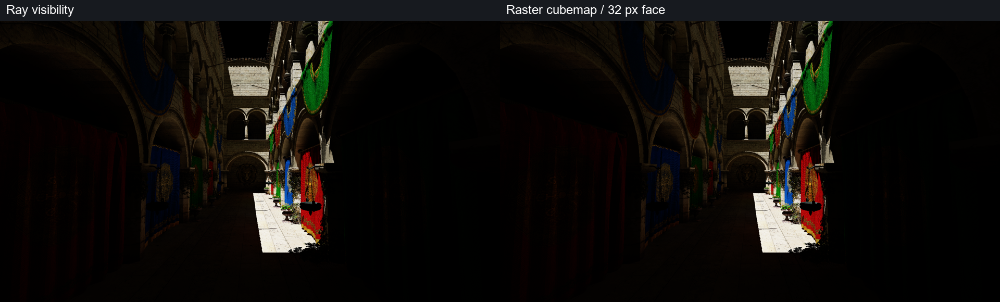
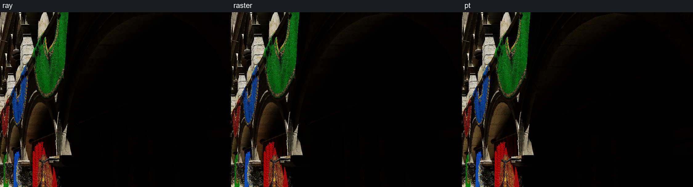
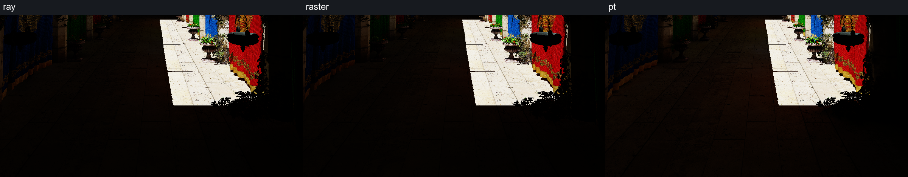
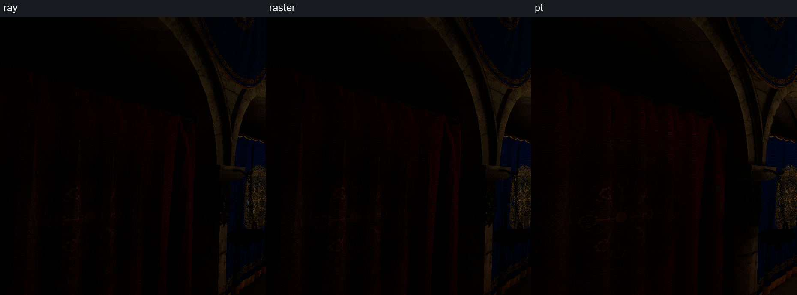
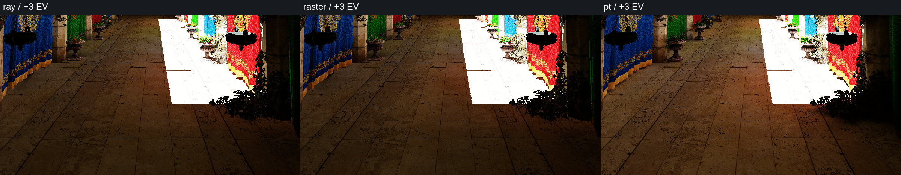
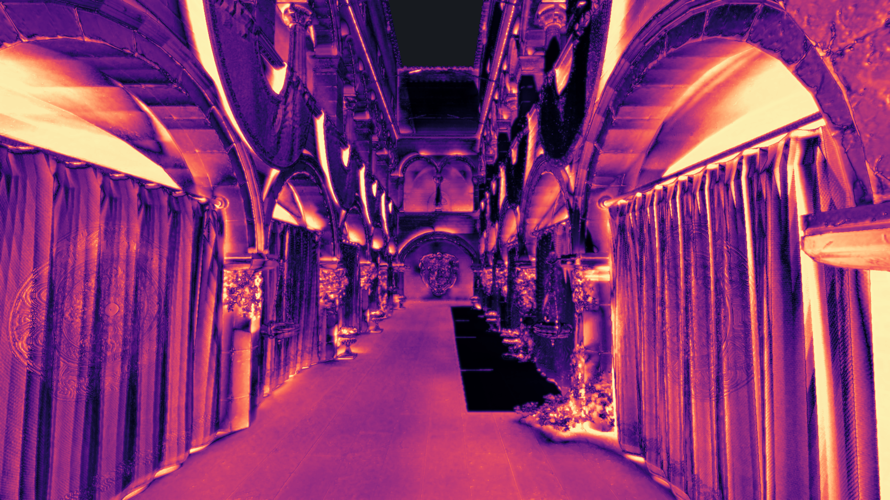

SponzaLambert，1920×1080，RTX 5070、D3D12。默认相机，方向光50、点光关闭。两组均22³官方布局，256个方向样本/probe/次更新，每帧32个probe循环更新（末尾回绕补足预算），hysteresis 0.97，原八点插值、两项数学精简开启，relocation/classification开启。无FG/NRD/ReSTIR。两组各预热65536帧（约197次全网格更新），再清空Accumulate，至少8192帧累积；按翻倍检查，必要时延长至32768帧。参考未经降噪65536 spp PT，主表面位置/法线一致。
Pass：光追后端 = probe射线可见性＋公共命中着色 → SDK八面体积分/重定位/分类；光栅后端 = 32 probe一批的分层cubemap可见性捕获（每面32²、六面、GS instancing、双面深度、alpha test）→ 按原DDGI方向最近邻读取捕获命中点 → 同一公共命中着色 → 原SDK积分。直接光阴影仍用射线，属于光栅可见性＋光追阴影的混合后端，并不是完整纯光栅GI。像素最终查询与Accumulate均保持原有路径。
cubemap存几何命中信息，不把整张cubemap每像素都着色；只着色原有256个方向样本。这样保持积分、照明估计器和光照递归一致；采集引入的角度离散、近裁剪与光栅精度差异仍然存在。近裁剪0.0001，远裁剪与原DDGI最大射线距离一致（两倍探针网格包围盒对角线，最小1）。整个cubemap的栅格化已计入GPU耗时。
| 采集后端 | MSE | HDR-FLIP | 整图ms | 探针更新ms | 累积翻倍RMS | 稳定 |
|---|---|---|---|---|---|---|
| ray | 0.00053649221 | 0.40864 | 1.883 | 0.100 | 0.0368% | True |
| raster | 0.0005399315 | 0.40803 | 7.351 | 5.573 | 0.0411% | True |
GPU计时为稳定阶段512帧平均；整图包含持续探针更新和显示流程。这里每帧32个probe，不可直接与此前全量更新的帧耗时比较。当前光栅版本为GS实例批处理原型，仍重复处理场景几何，尚无probe专用物体剔除/meshlet筛选；结果不代表光栅化方案的最佳性能上限。

两组均通过稳定检查且缓存数据全为有限值。光栅MSE高约0.64%，HDR-FLIP低约0.00060，整体画质接近；这些小幅差异不能说明光栅更准确。当前视角未见明显新增的cubemap接缝或大块漏光；两组共同存在相对PT的暗部和接触遮蔽偏差。量化采集会改变薄几何命中及relocation/classification：射线活跃4330、重定位455个，光栅活跃4288、重定位403个。
当前光栅后端更慢：每帧32probe时，更新由0.100ms增至5.573ms，整图由1.883ms增至7.351ms。主要成本是重复光栅化几何。应保留射线更新默认；本版用于研究对照，若继续优化需重点改进每probe几何剔除、批处理和分辨率调度。
已验证后端切换会重置历史，并通过16/32/64面分辨率切换与有限值检查。未测试所有相机路径，不能排除运动和极薄几何处的伪影。



以下统一额外提亮3EV检查暗部，不用于指标。

Magma固定[0,1]：黑紫误差低，橙黄误差高；先ray后raster。

指标在线性HDR可见表面mask评估，HDR-FLIP使用ACES、PPD67和同一PT曝光范围。